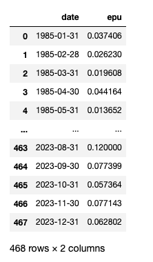
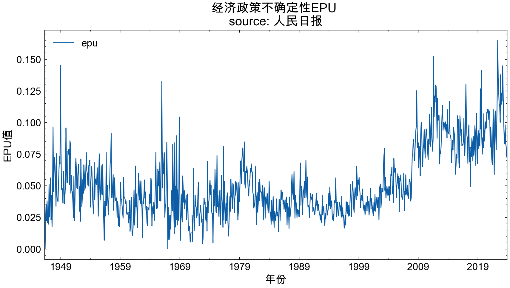

一、经济政策不确定性指标
经济政策不确定性(Economic Policy Uncertainty, EPU) 通常是用来衡量经济中政策不确定性水平的一种度量方式。 本文参考
Huang, Yun, and Paul Luk. "Measuring economic policy uncertainty in China." China Economic Review 59 (2020): 101367
1.1 新闻数据库
新闻数据集 | 含 人民日报/经济日报/光明日报 等 60+ 家媒体(2024.05.24)
人民日报rmrb: 1946-05-15 ~ 2024-05-24
光明日报gmrb: 1985-01-01 ~ 2024-05-24
人民政协报rmzxb: 2008-01-02 ~ 2024-05-24
经济日报jjrb: 2008-01-27 ~ 2024-05-24
中国青年报zqb: 2005-01-01 ~ 2024-05-24
南方周末nfzm: 2008-01-02 ~ 2023-5-31
1.2 算法
Step-1. 选择了114家中国大陆的报纸，其中包括北京、上海、广州和天津等主要城市的报纸。
Step-2. 对于每家报纸，搜索包含以下三个关键词之一的文章：经济、不确定性和政策。这些关键词的中文和英文对照可以在论文的表格1中找到。
Step-3. 将每个月的文章数量按照满足第一个关键词的文章数量进行缩放。
Step-4. 将时间序列标准化，使其在2000年1月至2011年12月期间的标准差为1。 保证所有媒体计算得到的epu是可比的。
Step-5. 对十家报纸的月度序列进行简单平均，并将指标归一化，使其在2000年1月至2011年12月期间的平均值为100。
文献中算法内容长， 结构化不足， 理解起来需要一些脑力。 大邓换种描述方式
EPU_t = m/n
- m 时期 t 同时含经济Economic、政策Policy、不确定Uncertainty三类词的新闻条数m
- n 时期 t 总的新闻条数n
本推文是利用一个媒体进行 EPU 指标的构建， 只需用到算法中的前 3 个步骤。
二、准备工作
EPU 算法代码已封装到 cntext2.1.1 中， 计算这个指数， 就变得容易多了。
2.1 安装cntext
我使用的自己 未公开 的cntext 2.1.1 版本， Bug频出，等调整好了再公开。
将 cntext-2.1.1-py3-none-any.whl 放置于桌面，打开 cmd (苹果电脑打开terminal)， 输入cd desktop
cd desktop
之后在 cmd (苹果电脑打开terminal) 中使用 pip3 安装
pip3 install pdfdocx
pip3 install distinctiveness
pip3 install pandarallel
pip3 install cntext-2.1.2-py3-none-any.whl
文末有 cntext-2.1.1-py3-none-any.whl 获取方式
2.2 查看内置词典
EPU词典已内置于 cntext2.1.1 中
import cntext as ct
print(ct.__version__)
ct.get_dict_list()
Run
2.1.1
['zh_common_NTUSD.yaml',
'zh_common_DUTIR.yaml',
'enzh_common_StopWords.yaml',
'en_valence_Concreteness.yaml',
'en_common_LoughranMcDonald.yaml',
'zh_common_FinanceSenti.yaml',
'zh_common_TsinghuaPraiseDegrade.yaml',
'zh_common_FEPU.yaml',
'en_common_ANEW.yaml',
'en_common_NRC.yaml',
'zh_valence_ChineseEmoBank.yaml',
'zh_valence_SixSemanticDimensionDatabase.yaml',
'zh_common_FinacialFormalUnformal.yaml',
'zh_common_LoughranMcDonald.yaml',
'enzh_common_AdvConj.yaml',
'en_common_SentiWS.yaml',
'zh_common_Digitalization.yaml',
'en_common_LSD2015.yaml',
'zh_common_HowNet.yaml',
'zh_common_EPU.yaml'] #Huang, Yun, and Paul Luk（2020）
2.3 导入词典
import cntext as ct
EPU_infos = ct.read_yaml_dict('zh_common_EPU.yaml')
print(EPU_infos)
Run
{'Name': '中文经济政策不确定性词典EPU',
'Desc': '中文经济政策不确定性词典EPU, 含经济Economic、政策Policy、不确定性Uncertainty三个词表', 'Refer': 'Huang, Yun, and Paul Luk. "Measuring economic policy uncertainty in China." China Economic Review 59 (2020): 101367',
'Category': ['经济', '政策', '不确定'],
'Dictionary':
{
'经济': ['经济', '金融'],
'政策': ['政策', '制度', '体制', '战略', '措施', '规章', '规例', '条例', '政治', '执政', '政府', '政委', '国务院', '人大', '人民代表大会', '中央', '国家主席', '总书记', '国家领导人', '总理', '改革', '整改', '整治', '规管', '监管', '财政', '税', '人民银行', '央行', '赤字', '利率'],
'不确定': ['不确定', '不明确', '波动', '震荡', '动荡', '不稳', '未明', '不明朗', '不清晰', '未清晰', '难料', '难以预料', '难以预测', '难以预计', '难以估计', '无法预料', '无法预测', '无法预计', '无法估计', '不可预料', '不可预测', '不可预计', '不可估计']
}
}
2.4 ct.epu
cntext2.1.1内置函数
ct.epu(df, freq=‘Y’,e_pattern='', p_pattern='', u_pattern='')
- df 新闻DataFrame； DataFrame必须含date和text两个字段；每行一条记录，含所有时期所有的新闻。
- freq 字符串；决定EPU的时间粒度， 年Y、月M、天D， 默认freq=‘Y’
- e_pattern 字符串；经济类词典，用
|间隔词语，形如 e_pattern = ‘经济|金融’ - p_pattern 字符串；政策词典，用
|间隔词语，形如 p_pattern = ‘政策|治理|行政’ - u_pattern 字符串；不确定性词典，用
|间隔词语，形如 u_pattern = ‘风险|危机|难以预测’
返回epu时间序列数据，格式为DataFrame
三、测量EPU
3.1 读取数据
大邓的 新闻数据集 | 含 人民日报/经济日报/光明日报 等 60+ 家媒体(2024.05.24)中的所有媒体， 均有csv格式， 内含 date 和 text 两个字段， csv中的每行是一条新闻。
import pandas as pd
rmrb_df = pd.read_csv('人民日报.csv.gzip', compression='gzip')
rmrb_df.rename(columns={'content': 'text'}, inplace=True)
rmrb_df = rmrb_df[['date', 'text']]
rmrb_df
3.2 批量运算
ct.epu(df, freq=‘Y’, e_pattern='', p_pattern='', u_pattern='')
- df 新闻DataFrame； DataFrame必须含date和text两个字段；每行一条记录，含所有时期所有的新闻。
- freq 字符串；决定EPU的时间粒度， 年Y、月M、天D， 默认freq=‘Y’
- e_pattern 字符串；经济类词典，用
|间隔词语，形如 e_pattern = ‘经济|金融’ - p_pattern 字符串；政策词典，用
|间隔词语，形如 p_pattern = ‘政策|治理|行政’ - u_pattern 字符串；不确定性词典，用
|间隔词语，形如 u_pattern = ‘风险|危机|难以预测’
返回epu时间序列数据，格式为DataFrame
import cntext ct
import pandas as pd
rmrb_df = pd.read_csv('人民日报.csv.gzip', compression='gzip')
rmrb_df.rename(columns={'content': 'text'}, inplace=True)
rmrb_df = rmrb_df[['date', 'text']]
#默认使用内置的zh_common_EPU.yaml，所以不设置参数e_pattern、p_pattern、u_pattern
#EPU的时间粒度是月度M
rmrb_EPU_df = ct.epu(df=rmrb_df,
freq='M',
)
rmrb_EPU_df

import cntext ct
import pandas as pd
gmrb_df = pd.read_csv('gmrb.csv.gzip', compression='gzip')
gmrb_df.rename(columns={'content': 'text'}, inplace=True)
gmrb_df = gmrb_df[['date', 'text']]
#默认使用内置的zh_common_EPU.yaml，所以不设置参数e_pattern、p_pattern、u_pattern
#EPU的时间粒度是月度M
gmrb_EPU_df = ct.epu(df=gmrb_df,
freq='M',
)
gmrb_EPU_df

3.3 注意
需要注意， 以上结果都是对一个媒体进行计算，所以没有进行标准化和归一化。
所以媒体1、媒体2计算得到的两个 epu1、epu2 进行数值大小的比较是没有意义的。 如果你有多个媒体，计算得到多个 epu1 、epu2、 epu3， 想计算 mean_epu , 那么记得实现论文算法里的 step4， 再执行 step5 求均值。
四、可视化
4.1 df.plot
df.plot使用的前提是要将日期字段调整为index, 满足下面形态的数据可以使用.plot绘图
rmrb_EPU_df.set_index('date')
rmrb_EPU_df.set_index('date').plot(figsize=(10, 5), title='EPU Index \nsource: China Renmin Daily News')
4.2 支持中文
支持中文的代码，无脑copy
import matplotlib.pyplot as plt
import matplotlib
import scienceplots
import platform
import matplotlib_inline
matplotlib_inline.backend_inline.set_matplotlib_formats('png', 'svg')
plt.style.use(['science', 'no-latex', 'cjk-sc-font'])
system = platform.system() # 获取操作系统类型
if system == 'Windows':
font = {'family': 'SimHei'}
elif system == 'Darwin':
font = {'family': 'Arial Unicode MS'}
else:
font = {'family': 'sans-serif'}
matplotlib.rc('font', **font) # 设置全局字体
rmrb_EPU_df.set_index('date').plot(figsize=(10, 5))
plt.title('经济政策不确定性EPU \nsource: 人民日报', size=15)
plt.xticks(size=12)
plt.xlabel('年份', size=13)
plt.ylabel('EPU值', size=13)
plt.show()

4.3 比较两个媒体的走势
两个新闻媒体覆盖的时间段不同，
人民日报rmrb: 1946-05-15 ~ 2023-12-18
光明日报gmrb: 1985-01-01 ~ 2023-12-18
截取1985-01-01之后的数据，进行比较。
rmrb_EPU_df2 = rmrb_EPU_df[rmrb_EPU_df['date']>'1985-01-01']
gmrb_EPU_df2 = gmrb_EPU_df[gmrb_EPU_df['date']>'1985-01-01']
rmrb_EPU_df2.set_index('date').plot(figsize=(10, 5))
plt.title('月度经济政策不确定性EPU \nsource: 人民日报', size=15)
plt.xticks(size=12)
plt.xlabel('年份', size=13)
plt.ylabel('EPU值', size=13)
plt.show()

gmrb_EPU_df2.set_index('date').plot(figsize=(10, 5))
plt.title('月度经济政策不确定性EPU \nsource: 光明日报', size=15)
plt.xticks(size=12)
plt.xlabel('年份', size=13)
plt.ylabel('EPU值', size=13)
plt.show()
光明日报数据中缺失了1989年了，所以图中有空挡。但是从两个图中可以看到 epu 的走势大致一致。
作为事后诸葛的大邓， 从人民日报和光明日报计算出的EPU可以看到， 23年不应该投资，应该保守点。
嗯嗯， 同时作为投资小白，人群中的反向指标人，今年本人收益率-20%，大家开心不~
五、相关内容
用到以上操作的代码，通过本文以及这4个推文，巩固 pandas 操作知识点。
- 代码 | 使用 地方gov工作报告 生成某类概念词频「面板数据」
- 代码 | 使用「新闻数据」构造概念词提及量「面板数据」
- 数据代码| 使用 cctv新闻联播文稿 构造「面板数据」
- 代码 | 使用 3571w专利申请数据 构造「面板数据」
- 代码 | 使用 MD&A文本 测量「企业不确定性感知FEPU指标」
相关文献
[1]Huang, Yun, and Paul Luk. "Measuring economic policy uncertainty in China." China Economic Review 59 (2020): 101367
[2]Caldara, Dario, Matteo Iacoviello, Patrick Molligo, Andrea Prestipino, and Andrea Raffo. "The economic effects of trade policy uncertainty." Journal of Monetary Economics 109 (2020): 38-59.
六、获取资料
-
免费领取rmrb_epu.csv
-
100元 cntext-2.1.2-py3-none-any.whl 加微信372335839，备注「姓名-学校-专业」